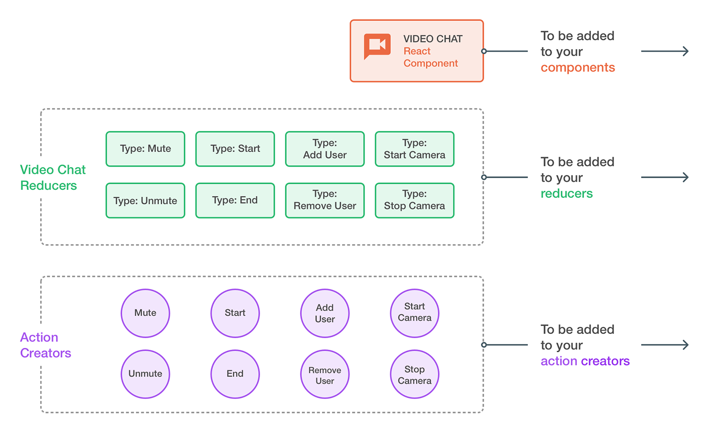
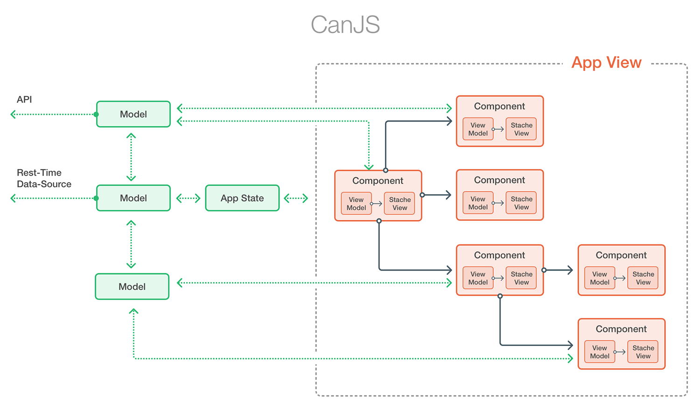
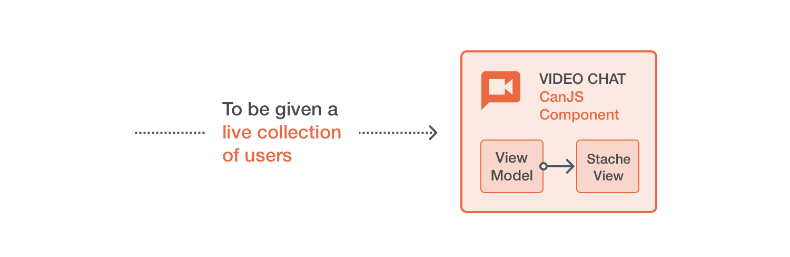

Comparison to Other Frameworks
CanJS is a full MVVM library for creating fantastic web applications, but let’s face it, there are a lot of other frameworks that solve the same problem. These days, most of the MV* frameworks and libraries have some mechanism for creating Custom Elements for the browser and binding those elements to some sort of observable state or data-store, along with features like routing and connecting data to a web service API. The modern MV* frameworks are starting to look more and more similar, as concepts and features are shared between them, and the general needs of developers start to converge.
You should evaluate if a framework fits your mental model of how applications should be built, and to do that you’ll need to know the subtle but important differences that may not seem obvious at first glance.
Two of the most popular frameworks/libraries for building web applications are React and Angular 2. So here are some comparisons you should consider when evaluating which framework to use to build your non-trivial application.
React
React is really just the "V in MVC", while CanJS is a full MVVM library, so it may feel like we’re comparing apples to bananas, but there are certain tradeoffs that can be explored when comparing CanJS to React
Because React is only a view layer, there has been a deluge of competing libraries, each trying to establish itself as the de facto state management library for your React app. Some of the more popular libraries right now include Redux, MobX, Alt, Reflux and, of course, Facebook’s own Flux library (an implementation of their Flux architecture). Even frameworks like Angular 2 and CanJS are joining in and making "React friendly" implementations.
But with all these choices and change, who is to say the state management library you pick for your React app will be around next year? The year after that? Things are moving so fast around the React ecosystem, it’s hard to see what it will look like in the coming years.
CanJS has a historical track record providing a stable platform in a way React cannot, because React is too new and has a small focus, inviting an unstable ecosystem of tooling to form around it. Read more about our approach balancing stability and innovation here.
To make a fair comparison, at times we will be referencing and comparing CanJS to React-Redux, arguably the most popular Flux implementation and state management library for React at this time
Observables
CanJS has observable constructs that are powerful but still very easy to use.
React has no real equivalent of observable state, and manages state changes through explicit calls to render() or setState().
React-Redux has a pattern for updating application state that is synchronous and uses pure functions, but it can be difficult to work with.
The synchronous data flow provided by the Redux store is generally insufficient for real web apps. The web is very async by nature, with it’s ajax calls, web-workers, web-sockets and all sorts of common APIs resolving asynchronously using events and callbacks. So you find yourself either writing a whole lot of code to manage your asynchronous action creation, or more likely you pull in asynchronous middleware like redux-thunk, redux-promise or redux-rx.
Suddenly, the strict unidirectional data flow, is no longer that easy to follow, and you end up having to write a non-trivial amount of code to support the Redux pattern of dispatch -> action -> reducer -> state.
const ViewModel = DefineMap.extend({
subreddit: "string",
posts: {
get(lastSetValue, resolve) {
this.postPromise
.then(response => resolve( response.json() ));
}
},
postsPromise() {
get() {
return fetch(`https://www.reddit.com/r/${this.subreddit}.json`)
}
}
});
VS
function requestPosts(subreddit) {
return {
type: REQUEST_POSTS,
subreddit
}
}
export const RECEIVE_POSTS = 'RECEIVE_POSTS'
function receivePosts(subreddit, json) {
return {
type: RECEIVE_POSTS,
subreddit,
posts: json.data.children.map(child => child.data),
receivedAt: Date.now()
}
}
// assumes thunkMiddleware is in use
export function fetchPosts(subreddit) {
return function (dispatch) {
dispatch(requestPosts(subreddit))
return fetch(`https://www.reddit.com/r/${subreddit}.json`)
.then(response => response.json())
.then(json =>
dispatch(receivePosts(subreddit, json))
);
}
}
const mapStateToProps = (state) => {
return {
posts: state.posts,
subredit: state.subredit
}
}
const mapDispatchToProps = (dispatch, ownProps) => {
return {
onTodoClick: (id) => {
this.props.dispatch(fetchPosts(ownProps.subreddit))
}
}
}
const VisiblePostsList = connect(
mapStateToProps,
mapDispatchToProps
)(PostsList)
export default VisiblePostsList
The functional aspects of Redux do have benefits to simplicity but there is obviously a trade-off, and you have to decide which way you prefer to attack simplifying the asynchronous and stateful demands of client side web UIs.
Using MobX observables with React is fairly popular, though not as popular as Redux, and could just as easily be compared to using CanJS observables with React, which is very possible and easy to do, because of CanJS’ modularity.
Data Fetching and Real-time Data
Can-Connect allows for CanJS observables to be connected to a data source such as an RESTful API or a real-time data stream, with advanced features like fall-through caching and batched minimal requests, so that your components can just request the data they need while can-connect figures out how to fetch that data in the most efficient way possible.
React, being just a view layer, has no concept of this.
Relay, a JavaScript framework for building data-driven React applications, has some very promising features, similar to can-connect, but requires you to implement a GraphQL server while Can-Connect can work with whatever data source or API you have.
Being tied directly to one particular type of back end service may end up with Relay being slightly easier to use, but Can-Connect’s flexibility, and it’s configurable integration points, will be valuable if you have different types of back-end services, like traditional REST APIs or you need to work with unique kinds of data stores.
One-Way Data Flow
One-Way data flow is touted as a benefit, that it simplifies the complexity of your UI state management. But if your problem is that state is changing unexpectedly or not changing when you think it should, maybe the solution is is to simplify your structure, not limit your tools.
One-Way data flow may be simpler to follow, but you end up writing a lot more code as a trade off. The reason 2-way binding became popular was that it removed a lot of boilerplate code: binding to a change, updating the state, updating any other dependants with the new state…etc.
CanJS supports many types of data-bindings in our views, including one-directional, two-way binding, sibling-to-sibling value binding, and binding directly to DOM events. CanJS makes it easy to save writing a lot of code and keep your app simple to follow at the same time.
// Binding to a Todo models completed property
const Todo = DefineMap.extend({
name: "string",
completed: "boolean"
});
// In stache
{{#for(todo of todos)}}
<label>
<input type="checkbox" checked:bind="todo.completed" />
{{ todo.name }}
</label>
{{/for}}
React has a dedication to the one-way data flow. This leads to a lot of boilerplate, hooking up event handlers just to change the state, over and over everywhere. Flux and React-Redux follow this same principle and ends up with even more code: actions, which get sent to a dispatcher, which pass the action to a store, to finally set the state. More code to write, more places for bugs to hide.
// minimal reducer
const todo = ( state, action ) => {
switch (action.type) {
case 'TOGGLE_TODO':
return Object.assign({}, state, {
completed: !state.completed
});
default:
return state;
}
}
// minimal mapStateToProps and mapDispatchToProps functions for container
const mapStateToProps = ( state ) => {
return {
todos: state.todos
};
};
const mapDispatchToProps = ( dispatch, ownProps ) => {
return {
onChange(id) {
dispatch({
type: 'TOGGLE_TODO',
id
});
}
};
};
const TodoListContainer = connect( mapStateToProps, mapDispatchToProps )( TodoList ) );
// in JSX
Todo = (props) => {
checkboxProps = {
checked: props.completed,
name = props.name,
onChange(event) {
props.onChange(props.name)
}
}
return <label><input type="checkbox" ...checkboxProps />{ props.name }}</label>
}
If the problem is losing track of what is changing the state, is the problem solved by adding more code, or is it better solved with a simpler abstraction and more succinct code?
DOM Libraries and Memory Leaks
Sometimes you are not starting a brand new project, and you’d rather incrementally add your new framework to your existing app, rather than do a whole re-write. Maybe you are using Bootstrap, or jQuery plugins, and you’d rather not re-implement everything you have at once.
CanJS makes working with other libraries seamless. You can just use can-stache to add can-components custom elements into your page as needed, and since CanJS works with real DOM events and attributes, everything just works as expected.
If you are using jQuery, jQuery plugins or Bootstrap, CanJS has a library, can-jquery, which was specifically created for apps using CanJS with jQuery, and allows all jQuery events or DOM manipulations to “just work” without any special code needed.
<!-- A Bootstrap Modal -->
<div id="my-modal" class="modal fade">
<div class="modal-dialog">
<div class="modal-content">
<div class="modal-body">
<script type="text/stache" can-autorender>
<!-- A CanJS user-form component -->
<user-form />
</script>
</div>
<div class="modal-footer">
<button type="button" class="btn btn-default" data-dismiss="modal">Close</button>
<button type="button" class="btn btn-primary save">Save changes</button>
</div>
</div><!-- /.modal-content -->
</div><!-- /.modal-dialog -->
</div><!-- /.modal -->
<button class="btn btn-primary newuser">New User</button>
<script>
$('.newuser').on('click', ev => { $("#my-modal").modal('show'); });
$("#my-modal").on('show.bs.modal', ev => {
let modal = $(ev.currentTarget);
modal.find('button.save').on('click', ev => {
modal.find("user-form").trigger('submit');
modal.modal('hide');
});
});
</script>
React replaces certain core aspects of the DOM, namely the event system and attributes, with its own “React version” of events and props. Because of this, React can have some frustrating “gotchas” when you try and integrate it with jQuery plugins or any other library that queries or manipulates the DOM.
Using ReactDOM.render() to insert React components in to your app, may even cause a memory leak. To prevent memory leaks when using ReactDOM this way, you need to be aware of and use ReactDOM.unmountComponentAtNode() every time a React node get’s deleted. This is important and often forgotten. Forgetting to call unmountComponentAtNode will cause your app to leak memory, so you’ll have to hook up this call, into your current app lifecycle.
// DO NOT DO THIS, THIS CAUSES A MEMORY LEAK
<div id="dialog-form" title="Create new user">
<div class="react-user-form-component"></div>
</div>
<button id="create-user">Create new user</button>
<script>
// This will leak memory
ReactDOM.render( $('.react-user-form-component').get(0), UserFormComponent );
dialog = $( "#dialog-form" ).dialog({
autoOpen: false,
modal: true,
buttons: {
"Create an account": dialog.find( "user-form" ).submit(),
Cancel: () => {
dialog.dialog( "close" );
}
}
});
$( "#create-user" ).button().on( "click", function() {
dialog.dialog( "open" );
});
</script>
Conversely CanJS is aware of its own DOM removal, and will clean up any event handlers or bindings automatically.
If you have existing legacy code, you’ll probably want integrate your new framework progressively, a piece at a time, and it’s important that things “just work”, without any surprises or frustrations.
Encapsulation of Components
There is a trend in JavaScript these days towards small reusable modules, tiny components, and little composable functions. But as with everything in programming there are tradeoffs, and if your modules are all too small, too isolated, the effort of wiring them together to become useful becomes greater than the benefit of reusability.
Encapsulation is one way to simplify your applications. By encapsulating modules and only exposing an api for input and output, your app becomes easier to reason as you can think about it in larger chunks that have their input and output defined. Having well encapsulated modules or components means you don’t have to hold all the details of the implementation in your head, just the parts that matter at the level you are using that module.
React-Redux has chosen to model their encapsulation in layers.
There is the View layer which holds all the React components, action creators and the dispatcher
There is the Store layer which holds all the reducers and redux middleware.
These layers have a simple and inverse API, the Store layer takes actions and returns state, the View layer takes in state and returns actions (as the user takes action on the UI).

…and there are layers within those layers, like action creators and redux-middleware.
This architecture is nice and simple, with discrete lines of interaction and well-defined purpose and interface. The tradeoff however, is that to add a feature you need to add all the individual pieces to each of these layers.
To illustrate the idea with an example you wanted to to add a "live video chat" feature to your app. Let’s pretend you have already implemented this sort of thing in some other app, so you are just going to reuse the shared portions of it for this app.
Let’s say the video chat feature assumes there is a users model that hold the URL to the video stream for each user. Features of the Video-Chat include:
Adding and removing users to your video chat
Muting the microphone
Turning the camera on and off
So in your React-Redux app, you would at minimum need to import:
A video chat component
8 action creators
9 reducers

…and wire them all together with code. The wiring up is not free, and though simple, may produce bugs and there is no guarantee the individual bits will work well together.
CanJS has a more cross-cutting encapsulation strategy. A can-component knows what data it accepts through attrs, and can fetch its own data with models as dependencies, and also handles the user interaction, state-changes and display all within the component.
The individual parts of a component follow the MVVM pattern, and so are decoupled and easily testable themselves, but act as a cohesive unit of functionality for sharing and reuse across the app.
Can-Components can then be used in parent can-component’s views, who can pass the child components attrs through the template bindings, and the whole app can be composed as a tree of components and HTML elements, each acting as little apps themselves.

To continue with the Video-Chat example above, sharing a video-chat component from one CanJS app to another would be far more straightforward. You would only have to import the 1 video chat component, and the only wiring necessary would be to pass in a list of Users to the video-component attrs.

Encapsulated modules, like can-components, have many advantages over monolithic layers, like the layers provided by react-redux.
The encapsulated components are easier to test. In the react-redux example, to run some black-box functional tests, you would have to pull in all the individual pieces and assemble them like a mini version of the app. The can-component on the other hand could just be imported and placed on the page, and have the tests run, because it encompasses all the behaviour it needs in one uni
Using encapsulated components makes it easier to find and fix bugs. Working across layers means understanding the different parts and how they work together, if something is broken you’ll have to check in several spots to see where the problem is coming from. When you fix bugs in layered code, you end up having to touch the code in many places, as opposed to the encapsulated module where all the related code is in one place. And touching different places in code increases the chances of having some unintended effect on downstream code, making it more fragile.
When you are working in a team, the layered approach can be more risky, as you’ll all be working in the same code a lot, since layer fixes and features will always span multiple layers, and you’ll have a lot more opportunity for overlap, or having a negative effect on another person’s feature, leading to merge conflicts and potential bugs.
CanJS chooses a pattern of encapsulated models over a layered architecture because they are easier to share, easier to test, easier to find and fix bugs in and easier to work together on as a team.
Summary
React is not really a full solution for building apps with web technology, and the React ecosystem is still the wild west when it comes to state management and supporting technologies.
CanJS simplifies your code with it’s observables and component architecture.
CanJS let’s you integrate with your existing project easier and lets you be confident you won’t be re-writing your app in a new JavaScript framework next year.
Angular 2
Angular 2 (ng2) is actually very similar to CanJS, if you look at these two "Hello-World" components, you see just how aligned the concepts behind Angular 2 and CanJS really are.
import Component from 'can-component';
import stache from 'can-stache';
export default Component.extend({
tag: "hello-world",
template: stache(`<h1 on:click="emphasize()">{{ message }}</h1>`),
viewModel: {
message: "Hello world!",
emphasize() {
this.message += '!';
}
}
});
AND
import { Component } from '@angular/core';
@Component({
selector: 'hello-world',
template: '<h1 (click)="emphasize()">{{ message }}</h1>'
})
export class HelloWorld {
message = 'Hello World!';
emphasize() {
this.message += '!';
}
};
Because it’s backed by Google, Angular is sometimes the "go-to" choice for teams developing web apps or web pages, but often it’s way more than what the project requires.
The steep learning curve, esoteric terminology, tricky syntax and concepts can end up slowing a team down far more than any benefit it provides. So it’s worth the effort to evaluate the framework and see if Angular 2 is really what your team needs.
That being said, Angular 2 also encompasses a lot more than just the MV* portion of the library: things like code generators, a dev-server, an SSR solution, and a system for script loading and dependency management. This makes Angular 2 a lot more comparable to CanJS’s parent project DoneJS, but we can still evaluate the parts that do line up, to find the notable differences you need to make a proper comparison.
Longevity and Stability
When evaluating Angular 2 as an option, it is unwise not to consider the proverbial elephant in the room: "Is this version going to stick around this time"?
Google and the Angular team released Angular 2 as a complete re-write with no backwards compatibility, and no real plan for upgrading your application beyond running both Angular 1 and 2 on the same page until you can get all your directives and services migrated over to the new one. Google has a history of abandoning projects, so you’ve got to ask: How long will it be until you’re rebuilding your app in the new, incompatible ng3?
With CanJS we have a guiding principle: You shouldn’t have to rewrite your application to keep pace with technology. We’re in it for the long haul, and dedicating to providing you stability and easy upgrades balanced with new features and progressive techniques in web development.
Modularity
Sometimes, you’re not building the next Gmail, you only have a few interactive forms on your site that could use some pizzaz. Sometimes, you already have a working app, and you want to move progressively into a new framework, not do a whole re-write of what is already working.
The key in these times, is to pick something you can use a piece at a time, as you need it, and pick the parts you need, without bringing in the kitchen sink. You’ll want modularity,
CanJS is very modular. In CanJS 3.0, a lot of time was spent breaking out the useful parts of the system into modules and packages that can be used independently of each other but still work harmoniously together.
For example you could:
just use can-compute to quickly bind HTML inputs to observable values, giving you a nicer abstraction without a lot of event listeners and callback coordination
use can-fixture by itself to to mock out ajax and websocket requests for your tests
use only can-connect and can-define to create awesome observable models that are connected in realtime to your existing API
use just can-route to take advantage of state-based observable routes, for the easy URL updating and decoupling the pattern provides
Any individual or combination of modules will provide you a great tools for streamlining your web development, and together they become our own little "Megazord” CanJS, greater than the sum of its parts
Angular 2 is more of an "everything out of the box" framework, where you get everything up front, and it all works together to help you develop more efficiently. The pieces and modules of Angular’s libraries are not really meant to be used on their own, and it would be hard to just extract the tiny bits you need without buying into the whole Angular framework.
There’s a funny story on Hacker News about JavaScript Expert whose performance improvements involved removing almost all the JavaScript on the site. The point is, you should know what you need, and include only the tools needed to get the job done, everything else is bloat.
Typescript
TypeScript is a typed superset of JavaScript that compiles to plain JavaScript that offers optional static typing and type inference. But if you are not already using TypeScript, should your choice of framework decide that for you? Do you even want it?
CanJS was created before ES6 and transpiling were prevalent in front-end JavaScript, so you don’t need TypeScript, though of course it would still would work with TypeScript if that was your preference.
Though the Angular 2 people have been assuring the general masses that "you don’t need typescript to write Angular 2 apps", the fact is the framework was designed around embracing the syntactic allowances, like decorators and class fields, and if the framework to be presented without them it would look clunky and pretty verbose.
const HelloWorldComponent = ng.core.Component({
selector: 'hello-world',
template: '<h1>Hello {{name}}!</h1>' + '<input [(ngModel)]="name">',
viewProviders: [GreetingService]
}).Class({
constructor: [GreetingService, function(greetingService) {
this.greetingService = greetingService;
this.name = "world";
}
});
let AppComponent = ng.core.Component({
selector: 'app',
template: '<hello-world></hello-world>',
directives: [HelloWorldComponent]
}).Class({
constructor: function() {}
});
document.addEventListener("DOMContentLoaded", function() {
ng.platform.browser.bootstrap(AppComponent);
});
TypeScript may offer all sort of benefits, especially for large apps with multiple teams working on them, but it’s more unnecessary baggage if you weren’t using typescript already.
Dependency Injection
Dependency Injection (DI) as a pattern can provide decoupling from your dependencies, and allow a flexibility of configuration for your modules, but DI as a framework adds additional verbosity and configuration all over your application. In JavaScript, a DI framework is useful in only rare cases, due to the flexibility of the language so, in the end, is it really worth it to have all the extra code and complexity?
CanJS chooses not to include a Dependency Injection framework, opting instead for the developer to decide if they need any more DI than JavaScript can already provide. JavaScript’s prototypal inheritance and mutable runtime instances can serve 90% of the uses for Dependency Injection, and if the developer decided they need a DI library they are free to add their own.
Angular 2 has doubled down on Dependency Injection, making every part of its design incorporate providers, services, and an injection syntax. This creates an odd pattern in Angular 2 where not only do you have to import a component or service and use it, you also have to declare the provider for it, often just passing the class as a shorthand.
Note in the example below FriendService is imported, used and also needs to be declared in the providers metadata:
import { Component } from '@angular/core';
import { FriendService } from 'app/friend.service';
@Component({
selector: 'my-friends',
providers : [FriendService],
template: `
<div *ngFor="#f of friends">
<h4> Name : {{f.name}} </h4> <h4>Age: {{f.age}}</h4>
</div>
`
})
export class FriendComponent {
constructor(_friendService: FriendService) {
this.friends = _friendService.getFriends();
}
}
A Dependency Injection system may have a place in other languages, like Java, but JavaScript can handle the pattern easily already. The DI System just ends up being extra syntax, and a there is a confusing loss of clarity when the classes and types imported into the class definition may not actually be the classes used to produce the dependency instance.
See the above code example, and realize that FriendService, may in some instances not actually be used in the FriendComponent, if some parent module defines a different provider for FriendComponent
Observables
CanJS is centered around it's powerful observable constructs. Angular 2 provides observables in the form of the officially endorsed third-party library RxJS. There are similarities between the observables provided by CanJS and the Rx Observables: They are both objects that you subscribe to with a callback to be called when the values change. They both support a declarative style of coding. They are both lazy, to benefit performance, doing work only when necessary. They both allow for easy asynchronous programming, and a reactive data flow.
But they are actually quite different.
The syntax alone reveals the conceptual difference. RxJS Observables embrace a functional reactive paradigm:
var keyup = Rx.Observable.fromEvent($input, 'keyup')
.map(function (e) {
return e.target.value;
})
.filter(function (text) {
return text.length > 2;
})
.debounce(750)
.distinctUntilChanged();
…where data flows through functions, that convert, filter and transform that data and pass it on to callbacks over time.
CanJS supports a more Object Oriented approach:
let Order = DefineMap.extend({
name: "string",
address: "string",
phone: "string",
restaurant: "string",
status: {
value: 'new'
},
items: {
Value: ItemsList
},
total: {
get() {
let total = 0.0;
this.items.forEach(item =>
total += parseFloat(item.price));
return total.toFixed(2);
}
},
markAs(status) {
this.status = status;
this.save();
}
});
…where data is packaged along with behaviors (methods) in objects that represent domain concepts.
While RxJS offers a stream of events and values, CanJS offers instances that can be directly acted upon, stored and serialized.
RxJS Observables represent a value that can change over time, much like a can-compute, but CanJS also has more advanced observable structures like maps and lists, which represent familiar constructs: an observable object and an observable array. These maps and lists notify subscribers whenever properties change or elements are inserted or removed, which allows for a very simplified style of coding.
var Person = DefineMap.extend({
first: "string",
last: "string",
get fullName(){
console.log("calculating fullName");
return this.first + " " + this.last;
}
});
var hero = new Person({first: "Wonder", last: "Woman"});
RxJS observables are essentially containers for values, the values can't be accessed directly, rather they can only access the value through the callbacks provided to the subscribe method. CanJS observables in contrast, can be acted on directly, setting new values and reading the current value, which allows for a very natural style of programing. Representing the values in this way, allows CanJS observables to also provide a "light typing" system, where classes have an inheritable and extendable interface that you can depend on, and handles conversion to the correct type, even in nested objects.
const Locator = DefineMap.extend({
state: {
type: "string",
set: function(){
this.city = null;
}
},
city: "string"
});
var locator = new Locator({
state: "IL",
city: "Chicago"
});
RxJS Observables provide powerful FRP event-streams, which allow a declarative style of programming that simplifies complex asynchronous code. CanJS observables take this even further, with an object oriented data approach, that allows both FRP event-streams with the use of can-stream and an even simpler style of programing, where you can act on observable instances directly, and still gain all the power of derived values and reactive updating of the views.
Steep Learning curve
Angular is known for it’s steep learning curve, and Angular 2 doesn’t really break that reputation.
There are a whole lot of new things a developer must learn to become effective with Angular 2. You have to learn the TypeScript syntax, all the examples are written in it so you’re going to have trouble if you skip this step. The Dependency Injection system is so ingrained, you must learn early how it works, and the syntax involved just to get going. There is the templating system, the decorators/annotations, a wealth of APIs and modules, and the kicker of it all is, because of the “all-or-nothing” nature of Angular 2, you have to learn a whole lot of it, just to get started.
CanJS also has many different modules and APIs to learn, but because of CanJS’s modular and individually packaged libraries, you only have to learn what you need, when you need it. There is no new "transpile-to-js" language to learn and no Dependency Injection framework to understand before you can start creating your components and composing your apps.
If your team needs to get started quickly, and hit the ground running, Angular 2 may not be the best choice, but CanJS just might be the right fit for your team.
Data Fetching and Real-time Data
Can-Connect allows for CanJS observables to be connected to a data source such as an RESTful API or a real-time data stream, with advanced features like fall-through caching and batched minimal requests, so that your components can just request the data they need while can-connect figures out how to fetch that data in the most efficient way possible.
Angular 2’s HTTP Service doesn’t have the advanced features like minimal requests and fall-through caches, and any real-time data-source would require you to write a custom service.
Summary
Angular 2 is not the safe bet you may be hoping it is. Google wouldn’t hesitate to drop it entirely when it no longer serves their purpose, it’s got a steep learning curve, and lot of features that you may not want or need.
CanJS has a mission to be the stable platform for you to develop your web apps on for years to come. It’s modular enough to take only the parts you need as you need them. It has all the features you need and doesn’t force you into patterns or technologies you don’t.
Non-technical comparison
If none of the technical arguments convince you to give CanJS a try, consider this: all the modern frameworks have more or less converged in 2016. You can build a very similar application, with routing, observables, models, and server side rendering (with some exceptions) with Angular 2, several of the React frameworks, Ember, or CanJS. Therefore, the MOST important factor, even beyond small technical differences, is the stability and stability of the framework. You want to bet on a horse that you can ride into the future, not the horse that looks prettiest today.
CanJS’s mission is to minimize the cost of building and maintaining JavaScript applications by balancing innovation and stability, helping developers transcend a changing technology landscape. We’ve spent the past 9 years focused on balancing these two oppoising goals, and have the track record to prove it. Read in more detail on our mission page.
There’s no advantage to choosing projects maintained by a big company, since big companies often kill platforms that many developers have invested in.

There’s no advantage to choosing a framework with a large community, since communities are fickle and change yearly.
There’s no advantage to choosing a framework based on ability to hire devs that list X on their resume, since any competent JavaScript developer can be equally effective in any modern framework with a couple days of learning.
This is why CanJS has a stellar reputation with enterprise companies. Stability and longevity are critical factors to your application’s success.